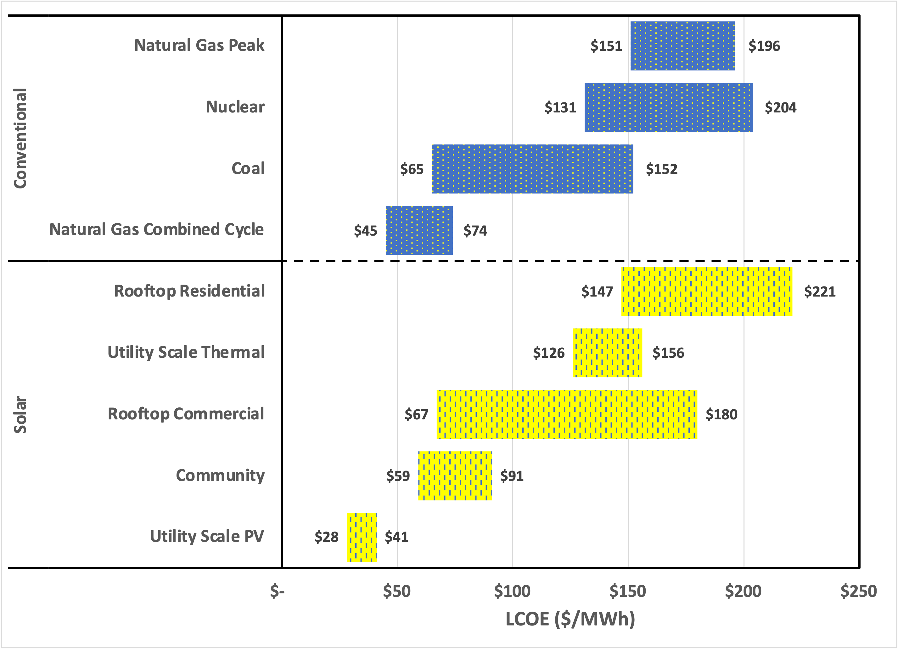

I’m going to spend an extra week of the so-called “free” time I devote to this rag examining technology advances that lead to the following remarkable statement:
Selected renewable energy generation technologies are cost-competitive with conventional generation technologies under certain circumstances.
This quote subtitled a chart prepared by the investment firm Lazard, a chart that was titled “Levelized Cost of Energy Comparison—Unsubsidized Analysis”. Thus, this analysis suggests that some renewables are now at the point at which they may be a financially reasonable choice, even without government support or popular insistence.
The statement asks, “Under what circumstances would renewables be preferred over conventional power production?” To extract that factoid, I’ve reproduced the chart below in a simplified form, comparing solar with conventional approaches. The bars represent a range of estimates, from the cheapest to the most expensive.

Let me attempt to translate for the uninitiated.
The “levelized cost of energy” or LCOE is a projection of how much it will cost to produce energy, averaged over the lifetime of the technology. For electricity, “energy” is measured in megawatt-hours (MWh), and “cost” is calculated in today’s dollars (suitably applying accounting practices of discounting future cash flows and paying interest on debt). So LCOE is an investment model for power generation alternatives.
As with all models, the result depends on assumptions. In this instance, assumptions include the lifetime of the technology (which is an unknown a priori ), the financing terms (interest rate, inflation rate, and risk premium), and the future energy market (projected). Comparing renewables with conventional generation naturally depends on the expenses of constructing, operating, and maintaining disparate facilities. Further, conventional generation is exposed to supply risks, while renewable generation is exposed to climate risks.
There are three additional key factors:
-
First, how long will the technology last?
-
Next, how much techno-economic risk is the lender willing to take?
-
Finally, how much do the utility’s investors expect for a return?
These are related: Lenders make quantitative judgments on the likelihood that borrowers will repay them, and these are reflected in the interest rate they charge—you can think of it as a “credit score” for the technology. Simplistically, the lender will need to write off the loan if the technology craps out before the loan is paid off. Similarly, revenue projections may fall short if a new technology comes along that lowers prices by increasing the supply of cheap energy. For utilities, the business won’t fail outright. But, bankruptcy (particularly with climate change, aging facilities, and more stringent regulations) is becoming more problematic.
Lazard plugged in a cost of debt at 8%, an expected rate of return of 12%, all technologies last 20 years before replacement, a tax rate of 40%, and other relatively arbitrary choices. It’s not essential to examine these choices critically, only to understand that they affect a utility executive’s decision when choosing a renewable source over a conventional power source.
It may seem puzzling that the two “natural gas” options differ in cost. But, the requirements for a “peaker” and a “combined cycle” are significantly different. The “peaker” is intended to ramp up power production when needed, generally when consumers demand more power quickly (such as during heat waves) to prevent brown-outs or blackouts. The “combined cycle” is a system designed for maximum fuel efficiency, combining the “cycles” of two separate generators.
So that’s just a tiny fraction of what you’d need to know as a utility executive to make a semi-rational decision on whether to choose a renewable or a conventional source of power. It’s not just about LCOE. There are additional complications:
-
Renewables are “intermittent” (meaning that you can’t necessarily harvest power when it is needed),
-
Electricity cannot be stored (at least not at the necessary scale), and
-
Electricity cannot be transmitted over long distances (so generation must be located near demand).
This intro is intended to lead into the next installment, where I will attempt to identify technological advances that have driven solar photovoltaics to the point at which they are competitive with the combustion of geologic carbon.
Finally, to start to answer the lead question, “Under what circumstances would renewables be preferred over conventional power production?” the answer is becoming more evident. Looking at the generation problem from a utility perspective, installing a large set of solar panels makes sense when demand increases yet is predictable. The most expensive part of a renewable system will be adjusting supply quickly to meet demand, in other words, running the peaker when the sun don’t shine, and the wind don’t blow.
Until next week.
Thank you for reading Healing the Earth with Technology. This post is public, so feel free to share it.